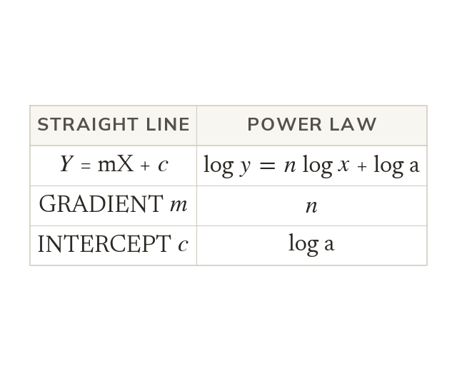
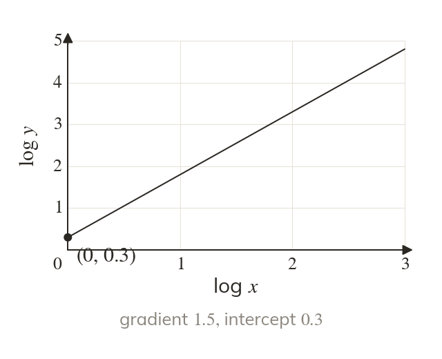
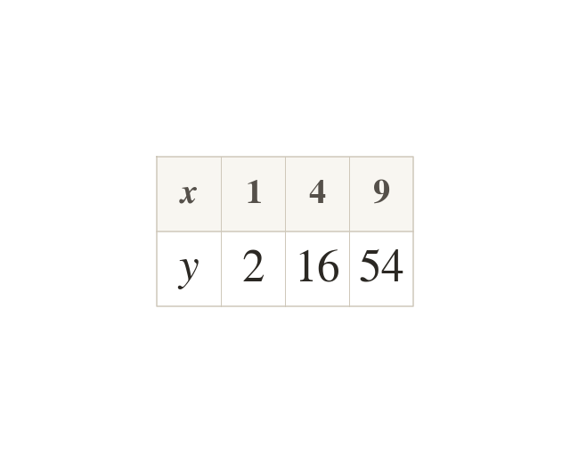
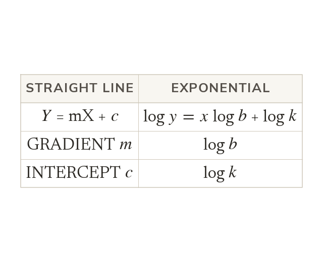
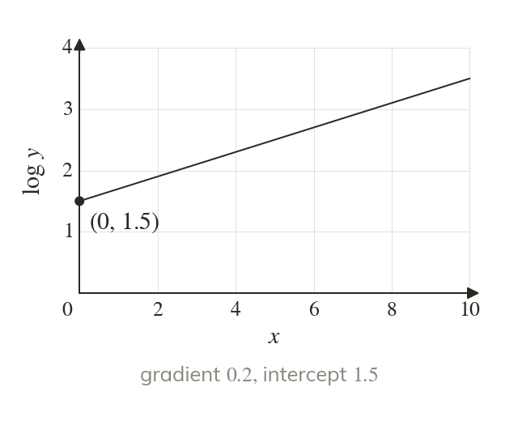
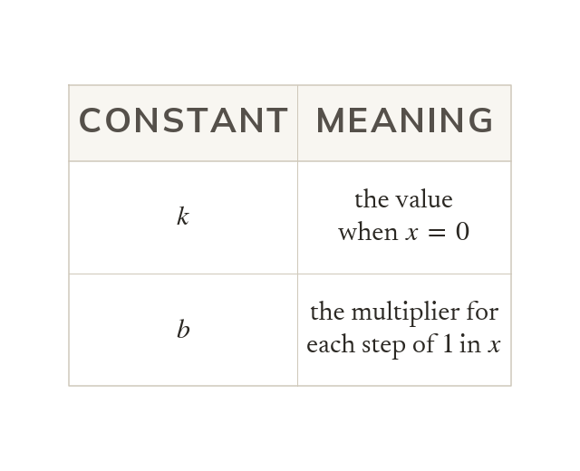

Logarithms straighten a power law
If taking logarithms gives log log + log So the graph of log against log is a straight line, with gradient and intercept log a.
Data that follow or lie on a curve, but taking logarithms turns each into a straight line. The gradient and intercept of that line give the constants, which is how a model is fitted to experimental data.
Work down the page at your own pace. Write every answer in your book first, then click to check it.
Read each card, then follow the worked examples one step at a time.

If taking logarithms gives log log + log So the graph of log against log is a straight line, with gradient and intercept log a.

A graph of log y against log x has gradient and intercept
So and log gives

With and the model is As a check, gives
Pick an answer. If it's wrong, the feedback tells you which mistake it was.
Write the blanks in your book first, then tap each one to check.
Read each card, then follow the worked examples one step at a time.

If taking logarithms gives log log + log So the graph of log against not log is a straight line, with gradient log and intercept log

A graph of log against x has gradient and intercept
So and giving

In is the value of when
is the number is multiplied by each time goes up by so means growth of a step.
Pick an answer. If it's wrong, the feedback tells you which mistake it was.
Write the blanks in your book first, then tap each one to check.
Finished? Next lesson: S1.1 Populations and Samples.
For each skill, tap the one that is true for you today. Your Revise pages start with anything you mark Not yet.
Your ratings are saved on this device only.
Log in, then search for a code to practise that skill.